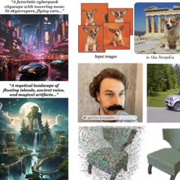

|
Ziniu Zhang Hi there! I am a senior student majoring in Computer Science and Technology(Honor College) at University of Electronic Science and Technology of China(UESTC). My interests span across computer vision and deep learning. Previously, I was privileged to intern in Data Intelligence Group advised by Prof. Wen Li. Additionally, I spent two unforgettable years in the UESTC ACM-ICPC team. Currently, I'm a visiting student in the University of Queensland advised by Asst. Prof. Yadan Luo specialized in test-time domain adaptation in 3D detection. I also colaborate closely with Liangyu Chen in MMLAB@NTU advised by Asst. Prof. Ziwei Liu working on multimodal agents. |

|
ResearchI have a broad interest in computer vision tasks both in 2D pixel and 3D point cloud. Now my research is focused on using vision large language models to reason and make decisions. I am passionate about using AI technology to make our lives more and more convenient. |
|

|
State of the Art on Diffusion Models for Visual Computing
Ryan Po, Wang Yifan, Vladislav Golyanik, Kfir Aberman, Jonathan T. Barron, Amit H. Bermano, Eric Ryan Chan, Tali Dekel, Aleksander Holynski, Angjoo Kanazawa, C. Karen Liu, Lingjie Liu, Ben Mildenhall, Matthias Nießner, Björn Ommer, Christian Theobalt, Peter Wonka, Gordon Wetzstein arXiv, 2023 A survey of recent progress in diffusion models for images, videos, and 3D. |
Awards |
|
- Silver medal in the 47th ACM-ICPC International Collegiate Programming Contest Asian Reginal (Rank: 48/511)
- Silver medal in the 8th China Collegiate Programming Contest(CCPC). - Bronze medal in the 7th China Collegiate Programming Contest(CCPC). - First Prize in the 23rd National Olympic in Informatics in Provinces(NOIP)(Senior group). |
Service- Director of 2022 UESTC ACM-ICPC Training Project in Dynamic Programming.- Co-organizer of the selection of 2022 UESTC ACM-ICPC university team. - Member of the technical consulting group of 2021 National Olympiad in Informatics in Provinces(NOIP). |
|
Thanks a lot to Jon Barron! |